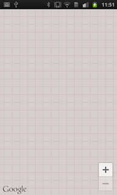

Common errors and mistakes when using the Maps API
In this section I’m going to go over some of the common mistakes people are making while setting up an Android application using the Google Maps Android API v2.
Failing to provide the correct location permissions
When
07-09 11:46:42.734: E/AndroidRuntime(3444): java.lang.SecurityException: Client must have ACCESS_FINE_LOCATION permission to request PRIORITY_HIGH_ACCURACY locations. 07-09 11:46:42.734: E/AndroidRuntime(3444): at android.os.Parcel.readException(Parcel.java:1322) 07-09 11:46:42.734: E/AndroidRuntime(3444): at android.os.Parcel.readException(Parcel.java:1276) 07-09 11:46:42.734: E/AndroidRuntime(3444): at beo.a(SourceFile:424) 07-09 11:46:42.734: E/AndroidRuntime(3444): at bes.a(SourceFile:232) 07-09 11:46:42.734: E/AndroidRuntime(3444): at maps.aj.b.j(Unknown Source) 07-09 11:46:42.734: E/AndroidRuntime(3444): at ws.h(SourceFile:692) 07-09 11:46:42.734: E/AndroidRuntime(3444): at wy.a(SourceFile:449) 07-09 11:46:42.734: E/AndroidRuntime(3444): at wu.a(SourceFile:166) 07-09 11:46:42.734: E/AndroidRuntime(3444): at wt.handleMessage(SourceFile:113) 07-09 11:46:42.734: E/AndroidRuntime(3444): at android.os.Handler.dispatchMessage(Handler.java:99) 07-09 11:46:42.734: E/AndroidRuntime(3444): at android.os.Looper.loop(Looper.java:123) 07-09 11:46:42.734: E/AndroidRuntime(3444): at android.app.ActivityThread.main(ActivityThread.java:3687) 07-09 11:46:42.734: E/AndroidRuntime(3444): at java.lang.reflect.Method.invokeNative(Native Method) 07-09 11:46:42.734: E/AndroidRuntime(3444): at java.lang.reflect.Method.invoke(Method.java:507) 07-09 11:46:42.734: E/AndroidRuntime(3444): at com.android.internal.os.ZygoteInit$MethodAndArgsCaller.run(ZygoteInit.java:842) 07-09 11:46:42.734: E/AndroidRuntime(3444): at com.android.internal.os.ZygoteInit.main(ZygoteInit.java:600) 07-09 11:46:42.734: E/AndroidRuntime(3444): at dalvik.system.NativeStart.main(Native Method)
Failing to provide the correct map permissions
Forgetting to add a permission like this
<uses-permission android:name="com.google.android.providers.gsf.permission.READ_GSERVICES" />Usually results in an empty map being displayed. No errors/warnings show up in LogCat.

Solution: Double check that all permissions are available in your manifest. Use the following sample manifest to verify that all permissions are present.
Failing to provide an API key entry
When no API key is provided you’ll see a clear error message in logcat what is missing and where you need to add it.
FATAL EXCEPTION: main
java.lang.RuntimeException: Unable to start activity ComponentInfo{com.ecs.google.maps.v2.actionbarsherlock/com.ecs.google.maps.v2.simple.SimpleMapFragmentActivity}: android.view.InflateException: Binary XML file line #2: Error inflating class fragment
at android.app.ActivityThread.performLaunchActivity(ActivityThread.java:1651)
at android.app.ActivityThread.handleLaunchActivity(ActivityThread.java:1667)
at android.app.ActivityThread.access$1500(ActivityThread.java:117)
at android.app.ActivityThread$H.handleMessage(ActivityThread.java:935)
at android.os.Handler.dispatchMessage(Handler.java:99)
at android.os.Looper.loop(Looper.java:123)
at android.app.ActivityThread.main(ActivityThread.java:3687)
at java.lang.reflect.Method.invokeNative(Native Method)
at java.lang.reflect.Method.invoke(Method.java:507)
at com.android.internal.os.ZygoteInit$MethodAndArgsCaller.run(ZygoteInit.java:842)
at com.android.internal.os.ZygoteInit.main(ZygoteInit.java:600)
at dalvik.system.NativeStart.main(Native Method)
Caused by: android.view.InflateException: Binary XML file line #2: Error inflating class fragment
at android.view.LayoutInflater.createViewFromTag(LayoutInflater.java:587)
at android.view.LayoutInflater.inflate(LayoutInflater.java:386)
at android.view.LayoutInflater.inflate(LayoutInflater.java:320)
at android.view.LayoutInflater.inflate(LayoutInflater.java:276)
at com.android.internal.policy.impl.PhoneWindow.setContentView(PhoneWindow.java:209)
at android.app.Activity.setContentView(Activity.java:1657)
at com.ecs.google.maps.v2.simple.SimpleMapFragmentActivity.onCreate(SimpleMapFragmentActivity.java:33)
at android.app.Instrumentation.callActivityOnCreate(Instrumentation.java:1047)
at android.app.ActivityThread.performLaunchActivity(ActivityThread.java:1615)
... 11 more
Caused by: java.lang.RuntimeException: API key not found. Check that <meta-data android:name="com.google.android.maps.v2.API_KEY" android:value="your API key"/> is in the <application> element of AndroidManifest.xml
at maps.ah.ba.a(Unknown Source)
at maps.ah.ba.a(Unknown Source)
at maps.ah.an.a(Unknown Source)
at maps.ah.bh.a(Unknown Source)
at maps.ah.bg.a(Unknown Source)
at bgl.onTransact(SourceFile:107)
at android.os.Binder.transact(Binder.java:279)
at com.google.android.gms.maps.internal.IMapFragmentDelegate$a$a.onCreateView(Unknown Source)
at com.google.android.gms.maps.SupportMapFragment$a.onCreateView(Unknown Source)
at com.google.android.gms.internal.bb$4.b(Unknown Source)
at com.google.android.gms.internal.bb.a(Unknown Source)
at com.google.android.gms.internal.bb.onCreateView(Unknown Source)
at com.google.android.gms.maps.SupportMapFragment.onCreateView(Unknown Source)
at android.support.v4.app.Fragment.performCreateView(Fragment.java:1460)
at android.support.v4.app.FragmentManagerImpl.moveToState(FragmentManager.java:884)
at android.support.v4.app.FragmentManagerImpl.moveToState(FragmentManager.java:1066)
at android.support.v4.app.FragmentManagerImpl.addFragment(FragmentManager.java:1168)
at android.support.v4.app.FragmentActivity.onCreateView(FragmentActivity.java:280)
at android.view.LayoutInflater.createViewFromTag(LayoutInflater.java:563)
... 19 moreProviding an invalid API key
When an invalid key is provided you’ll either get this error:
07-09 11:55:29.082: I/Google Maps Android API(4040): Failed to contact Google servers. Another attempt will be made when connectivity is established.or this one:
E/Google Maps Android API(4169): Failed to load map. Error contacting Google servers. This is probably an authentication issue (but could be due to network errors).Solution: Make sure you have a valid API key in your manifest. Use the following overview picture to ensure that everything is properly setup.

Using an Activity to launch a map on lower SDK levels
Attempting to launch an Activity containing a map on lower SDK levels results in the following error :
java.lang.RuntimeException: Unable to start activity ComponentInfo{com.ecs.google.maps.v2.actionbarsherlock/com.ecs.google.maps.v2.simple.SimpleMapActivity}: android.view.InflateException: Binary XML file line #2: Error inflating class fragment
at android.app.ActivityThread.performLaunchActivity(ActivityThread.java:1651)
at android.app.ActivityThread.handleLaunchActivity(ActivityThread.java:1667)
at android.app.ActivityThread.access$1500(ActivityThread.java:117)
at android.app.ActivityThread$H.handleMessage(ActivityThread.java:935)
at android.os.Handler.dispatchMessage(Handler.java:99)
at android.os.Looper.loop(Looper.java:123)
at android.app.ActivityThread.main(ActivityThread.java:3687)
at java.lang.reflect.Method.invokeNative(Native Method)
at java.lang.reflect.Method.invoke(Method.java:507)
at com.android.internal.os.ZygoteInit$MethodAndArgsCaller.run(ZygoteInit.java:842)
at com.android.internal.os.ZygoteInit.main(ZygoteInit.java:600)
at dalvik.system.NativeStart.main(Native Method)
Caused by: android.view.InflateException: Binary XML file line #2: Error inflating class fragment
at android.view.LayoutInflater.createViewFromTag(LayoutInflater.java:581)
at android.view.LayoutInflater.inflate(LayoutInflater.java:386)
at android.view.LayoutInflater.inflate(LayoutInflater.java:320)
at android.view.LayoutInflater.inflate(LayoutInflater.java:276)
at com.android.internal.policy.impl.PhoneWindow.setContentView(PhoneWindow.java:209)
at android.app.Activity.setContentView(Activity.java:1657)
at com.ecs.google.maps.v2.simple.SimpleMapActivity.onCreate(SimpleMapActivity.java:33)
at android.app.Instrumentation.callActivityOnCreate(Instrumentation.java:1047)
at android.app.ActivityThread.performLaunchActivity(ActivityThread.java:1615)
... 11 more
Caused by: java.lang.ClassNotFoundException: android.view.fragment in loader dalvik.system.PathClassLoader[/data/app/com.ecs.google.maps.v2.actionbarsherlock-1.apk]
at dalvik.system.PathClassLoader.findClass(PathClassLoader.java:240)
at java.lang.ClassLoader.loadClass(ClassLoader.java:551)
at java.lang.ClassLoader.loadClass(ClassLoader.java:511)
at android.view.LayoutInflater.createView(LayoutInflater.java:471)
at android.view.LayoutInflater.onCreateView(LayoutInflater.java:549)
at com.android.internal.policy.impl.PhoneLayoutInflater.onCreateView(PhoneLayoutInflater.java:66)
at android.view.LayoutInflater.createViewFromTag(LayoutInflater.java:568)
... 19 more
07-09 10:56:47.722: E/(136): Dumpstate > /data/log/dumpstate_app_errorSolution: use a FragmentActivity instead of an Activity.
Using a SupportMapFragment in an Activity
When attempting to use a SupportMapFragment in an Activity you get this:
FATAL EXCEPTION: main
java.lang.RuntimeException: Unable to start activity ComponentInfo{com.ecs.google.maps.v2.actionbarsherlock/com.ecs.google.maps.v2.simple.SimpleMapActivity}: android.view.InflateException: Binary XML file line #2: Error inflating class fragment
at android.app.ActivityThread.performLaunchActivity(ActivityThread.java:1651)
at android.app.ActivityThread.handleLaunchActivity(ActivityThread.java:1667)
at android.app.ActivityThread.access$1500(ActivityThread.java:117)
at android.app.ActivityThread$H.handleMessage(ActivityThread.java:935)
at android.os.Handler.dispatchMessage(Handler.java:99)
at android.os.Looper.loop(Looper.java:123)
at android.app.ActivityThread.main(ActivityThread.java:3687)
at java.lang.reflect.Method.invokeNative(Native Method)
at java.lang.reflect.Method.invoke(Method.java:507)
at com.android.internal.os.ZygoteInit$MethodAndArgsCaller.run(ZygoteInit.java:842)
at com.android.internal.os.ZygoteInit.main(ZygoteInit.java:600)
at dalvik.system.NativeStart.main(Native Method)
Caused by: android.view.InflateException: Binary XML file line #2: Error inflating class fragment
at android.view.LayoutInflater.createViewFromTag(LayoutInflater.java:581)
at android.view.LayoutInflater.inflate(LayoutInflater.java:386)
at android.view.LayoutInflater.inflate(LayoutInflater.java:320)
at android.view.LayoutInflater.inflate(LayoutInflater.java:276)
at com.android.internal.policy.impl.PhoneWindow.setContentView(PhoneWindow.java:209)
at android.app.Activity.setContentView(Activity.java:1657)
at com.ecs.google.maps.v2.simple.SimpleMapActivity.onCreate(SimpleMapActivity.java:33)
at android.app.Instrumentation.callActivityOnCreate(Instrumentation.java:1047)
at android.app.ActivityThread.performLaunchActivity(ActivityThread.java:1615)
... 11 more
Caused by: java.lang.ClassNotFoundException: android.view.fragment in loader dalvik.system.PathClassLoader[/data/app/com.ecs.google.maps.v2.actionbarsherlock-2.apk]
at dalvik.system.PathClassLoader.findClass(PathClassLoader.java:240)
at java.lang.ClassLoader.loadClass(ClassLoader.java:551)
at java.lang.ClassLoader.loadClass(ClassLoader.java:511)
at android.view.LayoutInflater.createView(LayoutInflater.java:471)
at android.view.LayoutInflater.onCreateView(LayoutInflater.java:549)
at com.android.internal.policy.impl.PhoneLayoutInflater.onCreateView(PhoneLayoutInflater.java:66)
at android.view.LayoutInflater.createViewFromTag(LayoutInflater.java:568)
... 19 moreSolution: use a SupportMapFragment in a FragmentActivity
Using a MapFragment in a FragmentActivity
When using a FragmentActivity but keeping the MapFragment in your layout you’ll get this:
FATAL EXCEPTION: main
java.lang.RuntimeException: Unable to start activity ComponentInfo{com.ecs.google.maps.v2.actionbarsherlock/com.ecs.google.maps.v2.simple.SimpleMapFragmentActivity}: android.view.InflateException: Binary XML file line #2: Error inflating class fragment
at android.app.ActivityThread.performLaunchActivity(ActivityThread.java:1651)
at android.app.ActivityThread.handleLaunchActivity(ActivityThread.java:1667)
at android.app.ActivityThread.access$1500(ActivityThread.java:117)
at android.app.ActivityThread$H.handleMessage(ActivityThread.java:935)
at android.os.Handler.dispatchMessage(Handler.java:99)
at android.os.Looper.loop(Looper.java:123)
at android.app.ActivityThread.main(ActivityThread.java:3687)
at java.lang.reflect.Method.invokeNative(Native Method)
at java.lang.reflect.Method.invoke(Method.java:507)
at com.android.internal.os.ZygoteInit$MethodAndArgsCaller.run(ZygoteInit.java:842)
at com.android.internal.os.ZygoteInit.main(ZygoteInit.java:600)
at dalvik.system.NativeStart.main(Native Method)
Caused by: android.view.InflateException: Binary XML file line #2: Error inflating class fragment
at android.view.LayoutInflater.createViewFromTag(LayoutInflater.java:587)
at android.view.LayoutInflater.inflate(LayoutInflater.java:386)
at android.view.LayoutInflater.inflate(LayoutInflater.java:320)
at android.view.LayoutInflater.inflate(LayoutInflater.java:276)
at com.android.internal.policy.impl.PhoneWindow.setContentView(PhoneWindow.java:209)
at android.app.Activity.setContentView(Activity.java:1657)
at com.ecs.google.maps.v2.simple.SimpleMapFragmentActivity.onCreate(SimpleMapFragmentActivity.java:33)
at android.app.Instrumentation.callActivityOnCreate(Instrumentation.java:1047)
at android.app.ActivityThread.performLaunchActivity(ActivityThread.java:1615)
... 11 more
Caused by: android.support.v4.app.Fragment$InstantiationException: Unable to instantiate fragment com.google.android.gms.maps.MapFragment: make sure class name exists, is public, and has an empty constructor that is public
at android.support.v4.app.Fragment.instantiate(Fragment.java:401)
at android.support.v4.app.Fragment.instantiate(Fragment.java:369)
at android.support.v4.app.FragmentActivity.onCreateView(FragmentActivity.java:272)
at android.view.LayoutInflater.createViewFromTag(LayoutInflater.java:563)
... 19 more
Caused by: java.lang.ClassNotFoundException: com.google.android.gms.maps.MapFragment in loader dalvik.system.PathClassLoader[/data/app/com.ecs.google.maps.v2.actionbarsherlock-2.apk]
at dalvik.system.PathClassLoader.findClass(PathClassLoader.java:240)
at java.lang.ClassLoader.loadClass(ClassLoader.java:551)
at java.lang.ClassLoader.loadClass(ClassLoader.java:511)
at android.support.v4.app.Fragment.instantiate(Fragment.java:391)
... 22 more
07-09 10:58:51.503: W/ActivityManager(136): Force finishing activity com.ecs.google.maps.v2.actionbarsherlock/com.ecs.google.maps.v2.simple.SimpleMapFragmentActivity
07-09 10:58:51.507: E/(136): Dumpstate > /data/log/dumpstate_app_errorSolution: Ensure that when using a FragmentActivity you have a corresponding SupportMapFragment in your layout.
Other misc errors
investigate these in more detail…
D/dalvikvm(4169): DexOpt: couldn't find field Landroid/content/res/Configuration;.smallestScreenWidthDp
W/dalvikvm(4169): VFY: unable to resolve instance field 41
D/dalvikvm(4169): VFY: replacing opcode 0x52 at 0x0012
D/dalvikvm(4169): VFY: dead code 0x0014-0018 in Lcom/google/android/gms/common/GooglePlayServicesUtil;.b (Landroid/content/res/Resources;)Z
W/dalvikvm(4169): Unable to resolve superclass of Lmaps/p/w; (718)
W/dalvikvm(4169): Link of class 'Lmaps/p/w;' failed
W/dalvikvm(4169): Unable to resolve superclass of Lmaps/aq/as; (5347)
W/dalvikvm(4169): Link of class 'Lmaps/aq/as;' failed
W/dalvikvm(4169): Unable to resolve superclass of Lmaps/ag/l; (4576)
W/dalvikvm(4169): Link of class 'Lmaps/ag/l;' failed
E/dalvikvm(4169): Could not find class 'maps.ag.l', referenced from method maps.ah.an.a
W/dalvikvm(4169): VFY: unable to resolve new-instance 4420 (Lmaps/ag/l;) in Lmaps/ah/an;
D/dalvikvm(4169): VFY: replacing opcode 0x22 at 0x0085
D/dalvikvm(4169): VFY: dead code 0x0087-0093 in Lmaps/ah/an;.a (Landroid/view/LayoutInflater;Lcom/google/android/gms/maps/GoogleMapOptions;Z)Lmaps/ah/an;
D/dalvikvm(4169): GC_CONCURRENT freed 842K, 51% free 3333K/6727K, external 2059K/2108K, paused 3ms+4ms
D/dalvikvm(4169): GC_CONCURRENT freed 834K, 50% free 3460K/6855K, external 1801K/2108K, paused 3ms+2ms
D/libEGL(4169): loaded /system/lib/egl/libEGL_POWERVR_SGX540_120.so
D/libEGL(4169): loaded /system/lib/egl/libGLESv1_CM_POWERVR_SGX540_120.so
D/libEGL(4169): loaded /system/lib/egl/libGLESv2_POWERVR_SGX540_120.so
I/Google Maps Android API(4169): Failed to contact Google servers. Another attempt will be made when connectivity is established.
D/dalvikvm(4169): GC_CONCURRENT freed 790K, 50% free 3505K/6919K, external 2007K/2108K, paused 17ms+3ms
E/Google Maps Android API(4169): Failed to load map. Error contacting Google servers. This is probably an authentication issue (but could be due to network errors).